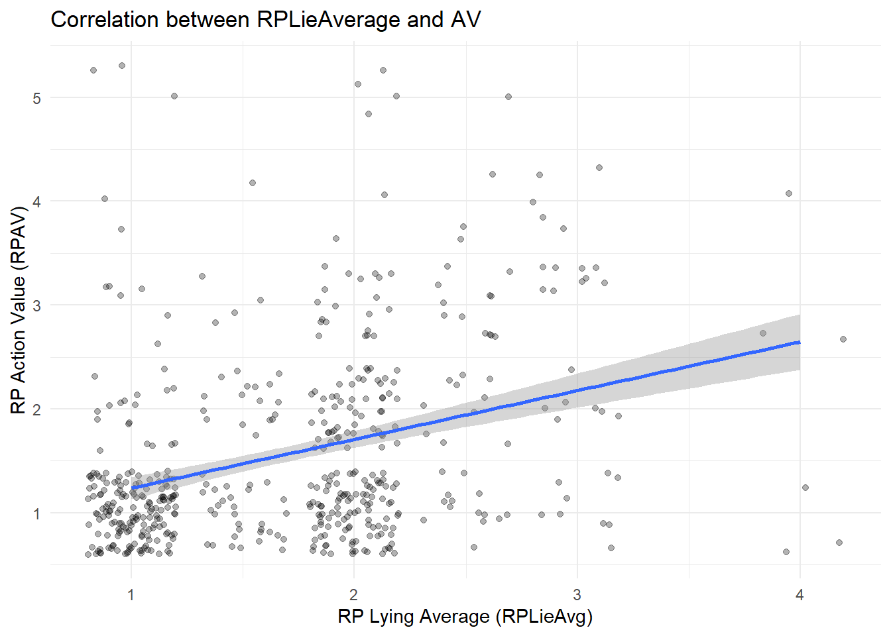
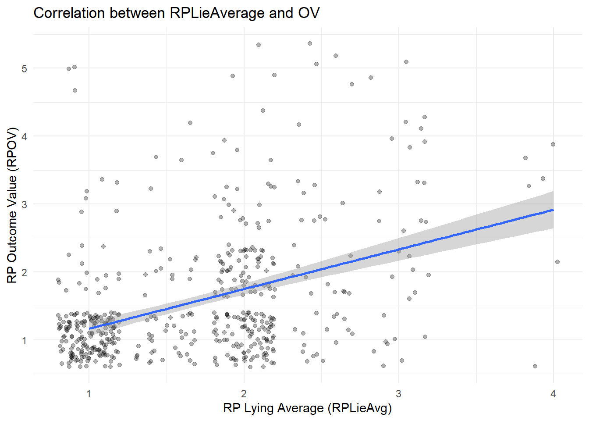
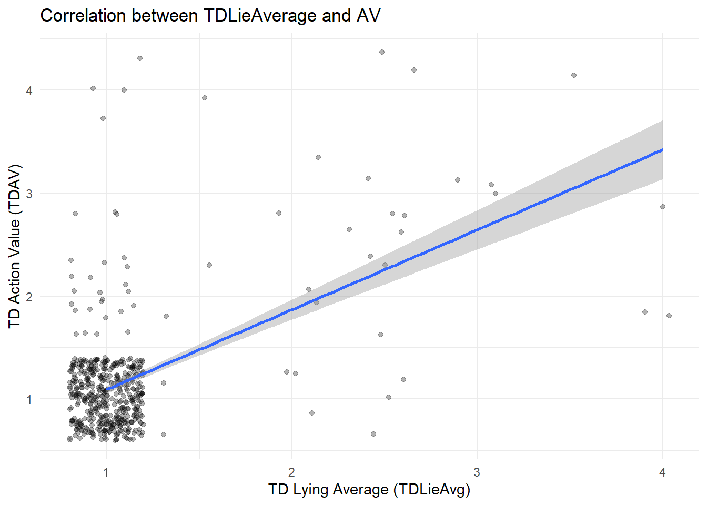
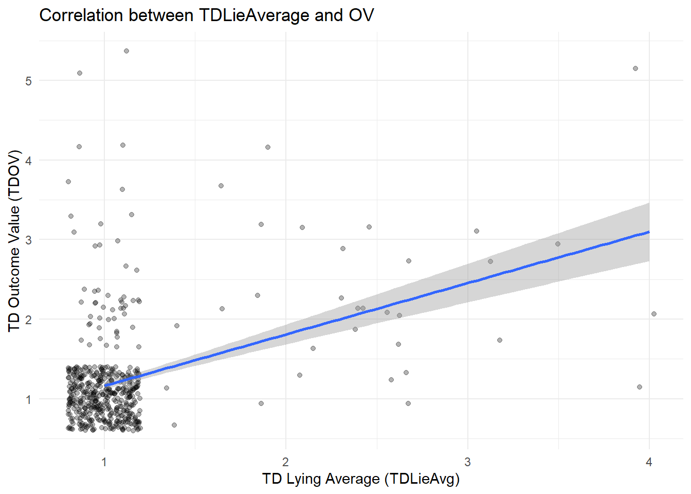
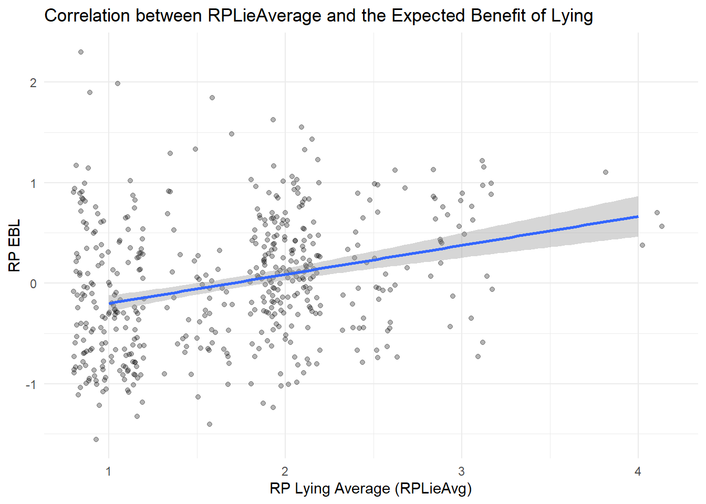
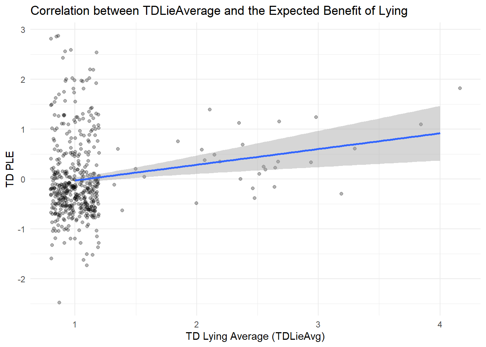

The goal of this project is to run and graph the Expectancy-Value theory correalations for my thesis.
library(haven)
library(tidyr)
library(tidyverse)## ── Attaching core tidyverse packages ──────────────────────── tidyverse 2.0.0 ──
## ✔ dplyr 1.1.4 ✔ purrr 1.0.4
## ✔ forcats 1.0.0 ✔ readr 2.1.5
## ✔ ggplot2 3.5.2 ✔ stringr 1.5.1
## ✔ lubridate 1.9.4 ✔ tibble 3.2.1
## ── Conflicts ────────────────────────────────────────── tidyverse_conflicts() ──
## ✖ dplyr::filter() masks stats::filter()
## ✖ dplyr::lag() masks stats::lag()
## ℹ Use the conflicted package (<http://conflicted.r-lib.org/>) to force all conflicts to become errors“C:- Wake Forest University.sav”
Thesis <- read_spss("C:/Users/crawl/OneDrive - Wake Forest University/GitHub/Portfolio/ThesisAllDataNewNew.sav")Lying, AV, OV
cor.test(Thesis$RPLieAvg, Thesis$RP_AV, method = "pearson")##
## Pearson's product-moment correlation
##
## data: Thesis$RPLieAvg and Thesis$RP_AV
## t = 8.2504, df = 508, p-value = 1.365e-15
## alternative hypothesis: true correlation is not equal to 0
## 95 percent confidence interval:
## 0.2648255 0.4180947
## sample estimates:
## cor
## 0.3437474library(ggplot2)ggplot(Thesis, aes(x = RPLieAvg, y = RP_AV)) +
geom_jitter(alpha = 0.3) +
geom_smooth(method = "lm", se = TRUE) +
labs(
x = "RP Lying Average (RPLieAvg)",
y = "RP Action Value (RPAV)",
title = "Correlation between RPLieAverage and AV"
) +
theme_minimal()## `geom_smooth()` using formula = 'y ~ x'
cor.test(Thesis$RPLieAvg, Thesis$RP_OV, method = "pearson")##
## Pearson's product-moment correlation
##
## data: Thesis$RPLieAvg and Thesis$RP_OV
## t = 10.071, df = 508, p-value < 2.2e-16
## alternative hypothesis: true correlation is not equal to 0
## 95 percent confidence interval:
## 0.3329271 0.4778596
## sample estimates:
## cor
## 0.4079602ggplot(Thesis, aes(x = RPLieAvg, y = RP_OV)) +
geom_jitter(alpha = 0.3) +
geom_smooth(method = "lm", se = TRUE) +
labs(
x = "RP Lying Average (RPLieAvg)",
y = "RP Outcome Value (RPOV)",
title = "Correlation between RPLieAverage and OV"
) +
theme_minimal()## `geom_smooth()` using formula = 'y ~ x'
cor.test(Thesis$TDLieAvg, Thesis$TD_AV, method = "pearson")##
## Pearson's product-moment correlation
##
## data: Thesis$TDLieAvg and Thesis$TD_AV
## t = 15.641, df = 508, p-value < 2.2e-16
## alternative hypothesis: true correlation is not equal to 0
## 95 percent confidence interval:
## 0.5084616 0.6259584
## sample estimates:
## cor
## 0.5701181ggplot(Thesis, aes(x = TDLieAvg, y = TD_AV)) +
geom_jitter(alpha = 0.3) +
geom_smooth(method = "lm", se = TRUE) +
labs(
x = "TD Lying Average (TDLieAvg)",
y = "TD Action Value (TDAV)",
title = "Correlation between TDLieAverage and AV"
) +
theme_minimal()## `geom_smooth()` using formula = 'y ~ x'
cor.test(Thesis$TDLieAvg, Thesis$TD_OV, method = "pearson")##
## Pearson's product-moment correlation
##
## data: Thesis$TDLieAvg and Thesis$TD_OV
## t = 10.156, df = 508, p-value < 2.2e-16
## alternative hypothesis: true correlation is not equal to 0
## 95 percent confidence interval:
## 0.3359872 0.4805139
## sample estimates:
## cor
## 0.4108283ggplot(Thesis, aes(x = TDLieAvg, y = TD_OV)) +
geom_jitter(alpha = 0.3) +
geom_smooth(method = "lm", se = TRUE) +
labs(
x = "TD Lying Average (TDLieAvg)",
y = "TD Outcome Value (TDOV)",
title = "Correlation between TDLieAverage and OV"
) +
theme_minimal()## `geom_smooth()` using formula = 'y ~ x'
To the degree that an individual values the act of attempting to deceive others and successfully deceiving others they are more inclined to lie.
Lying and EBL
cor.test(Thesis$RPLieAvg, Thesis$RP_PLE_FC, method = "pearson")##
## Pearson's product-moment correlation
##
## data: Thesis$RPLieAvg and Thesis$RP_PLE_FC
## t = 6.7161, df = 491, p-value = 5.177e-11
## alternative hypothesis: true correlation is not equal to 0
## 95 percent confidence interval:
## 0.2070549 0.3689237
## sample estimates:
## cor
## 0.2900625ggplot(Thesis, aes(x = RPLieAvg, y = RP_PLE_FC)) +
geom_jitter(alpha = 0.3) +
geom_smooth(method = "lm", se = TRUE) +
labs(
x = "RP Lying Average (RPLieAvg)",
y = "RP EBL",
title = "Correlation between RPLieAverage and the Expected Benefit of Lying"
) +
theme_minimal()## `geom_smooth()` using formula = 'y ~ x'## Warning: Removed 17 rows containing non-finite outside the scale range
## (`stat_smooth()`).## Warning: Removed 17 rows containing missing values or values outside the scale range
## (`geom_point()`).
cor.test(Thesis$TDLieAvg, Thesis$TD_PLE_FC, method = "pearson")##
## Pearson's product-moment correlation
##
## data: Thesis$TDLieAvg and Thesis$TD_PLE_FC
## t = 3.3214, df = 491, p-value = 0.0009623
## alternative hypothesis: true correlation is not equal to 0
## 95 percent confidence interval:
## 0.06072203 0.23349339
## sample estimates:
## cor
## 0.1482386ggplot(Thesis, aes(x = TDLieAvg, y = TD_PLE_FC)) +
geom_jitter(alpha = 0.3) +
geom_smooth(method = "lm", se = TRUE) +
labs(
x = "TD Lying Average (TDLieAvg)",
y = "TD PLE",
title = "Correlation between TDLieAverage and the Expected Benefit of Lying"
) +
theme_minimal()## `geom_smooth()` using formula = 'y ~ x'## Warning: Removed 17 rows containing non-finite outside the scale range
## (`stat_smooth()`).## Warning: Removed 17 rows containing missing values or values outside the scale range
## (`geom_point()`).
Individuals are more likely to lie in a given situation if they believe that their most valued goals will be accomplished via deception.
model1_step1 <- lm(RPLieAvg ~ RP_PLE_FC + RP_AOE_C, data = Thesis)
summary(model1_step1)##
## Call:
## lm(formula = RPLieAvg ~ RP_PLE_FC + RP_AOE_C, data = Thesis)
##
## Residuals:
## Min 1Q Median 3Q Max
## -1.52384 -0.50021 0.03181 0.37466 2.06494
##
## Coefficients:
## Estimate Std. Error t value Pr(>|t|)
## (Intercept) 1.69170 0.02683 63.041 < 2e-16 ***
## RP_PLE_FC 0.28995 0.04209 6.889 1.73e-11 ***
## RP_AOE_C 0.12131 0.02141 5.667 2.48e-08 ***
## ---
## Signif. codes: 0 '***' 0.001 '**' 0.01 '*' 0.05 '.' 0.1 ' ' 1
##
## Residual standard error: 0.5957 on 490 degrees of freedom
## (17 observations deleted due to missingness)
## Multiple R-squared: 0.1405, Adjusted R-squared: 0.137
## F-statistic: 40.04 on 2 and 490 DF, p-value: < 2.2e-16model1_step2 <- lm(RPLieAvg ~ RP_PLE_FC + RP_AOE_C + RP_Int, data = Thesis)
summary(model1_step2)##
## Call:
## lm(formula = RPLieAvg ~ RP_PLE_FC + RP_AOE_C + RP_Int, data = Thesis)
##
## Residuals:
## Min 1Q Median 3Q Max
## -2.22572 -0.46043 0.00774 0.39473 1.99085
##
## Coefficients:
## Estimate Std. Error t value Pr(>|t|)
## (Intercept) 1.69090 0.02617 64.610 < 2e-16 ***
## RP_PLE_FC 0.31570 0.04135 7.634 1.20e-13 ***
## RP_AOE_C 0.12196 0.02088 5.842 9.43e-09 ***
## RP_Int 0.15506 0.03029 5.119 4.43e-07 ***
## ---
## Signif. codes: 0 '***' 0.001 '**' 0.01 '*' 0.05 '.' 0.1 ' ' 1
##
## Residual standard error: 0.581 on 489 degrees of freedom
## (17 observations deleted due to missingness)
## Multiple R-squared: 0.1842, Adjusted R-squared: 0.1792
## F-statistic: 36.8 on 3 and 489 DF, p-value: < 2.2e-16model2_step1 <- lm(TDLieAvg ~ TD_PLE_FC + TD_AOE_C, data = Thesis)
summary(model2_step1)##
## Call:
## lm(formula = TDLieAvg ~ TD_PLE_FC + TD_AOE_C, data = Thesis)
##
## Residuals:
## Min 1Q Median 3Q Max
## -0.31272 -0.11315 -0.07451 -0.03030 2.80007
##
## Coefficients:
## Estimate Std. Error t value Pr(>|t|)
## (Intercept) 1.08434 0.01653 65.594 < 2e-16 ***
## TD_PLE_FC 0.07825 0.02143 3.651 0.000289 ***
## TD_AOE_C 0.02424 0.01303 1.860 0.063432 .
## ---
## Signif. codes: 0 '***' 0.001 '**' 0.01 '*' 0.05 '.' 0.1 ' ' 1
##
## Residual standard error: 0.3669 on 490 degrees of freedom
## (17 observations deleted due to missingness)
## Multiple R-squared: 0.02883, Adjusted R-squared: 0.02487
## F-statistic: 7.274 on 2 and 490 DF, p-value: 0.0007707model2_step2 <- lm(TDLieAvg ~ TD_PLE_FC + TD_AOE_C + TD_Int, data = Thesis)
summary(model2_step2)##
## Call:
## lm(formula = TDLieAvg ~ TD_PLE_FC + TD_AOE_C + TD_Int, data = Thesis)
##
## Residuals:
## Min 1Q Median 3Q Max
## -0.60185 -0.09771 -0.05926 -0.04154 2.69126
##
## Coefficients:
## Estimate Std. Error t value Pr(>|t|)
## (Intercept) 1.09700 0.01667 65.806 < 2e-16 ***
## TD_PLE_FC 0.10060 0.02199 4.574 6.08e-06 ***
## TD_AOE_C 0.02152 0.01288 1.671 0.095386 .
## TD_Int 0.05724 0.01539 3.719 0.000223 ***
## ---
## Signif. codes: 0 '***' 0.001 '**' 0.01 '*' 0.05 '.' 0.1 ' ' 1
##
## Residual standard error: 0.3622 on 489 degrees of freedom
## (17 observations deleted due to missingness)
## Multiple R-squared: 0.05554, Adjusted R-squared: 0.04975
## F-statistic: 9.586 on 3 and 489 DF, p-value: 3.68e-06Sig positive slope for interactions in each scenario - individual with a high AOE is significantly more likely to lie, compared to an individual with a low AOE, because they perceive there to be a stronger connection between the expected benefit of lying (EBL) and deception itself.